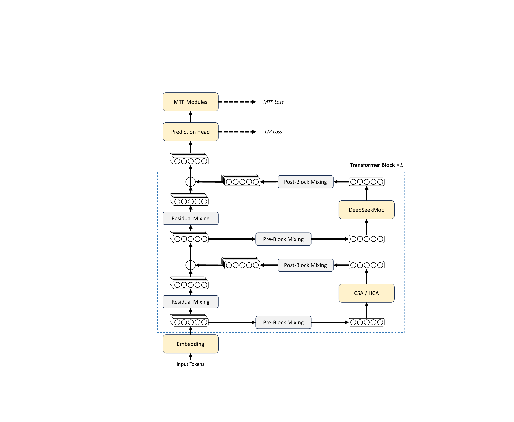
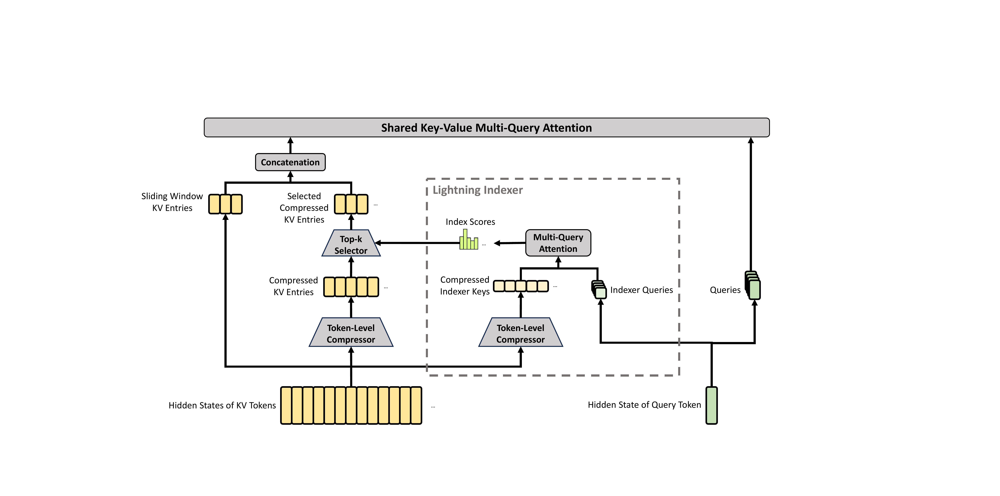
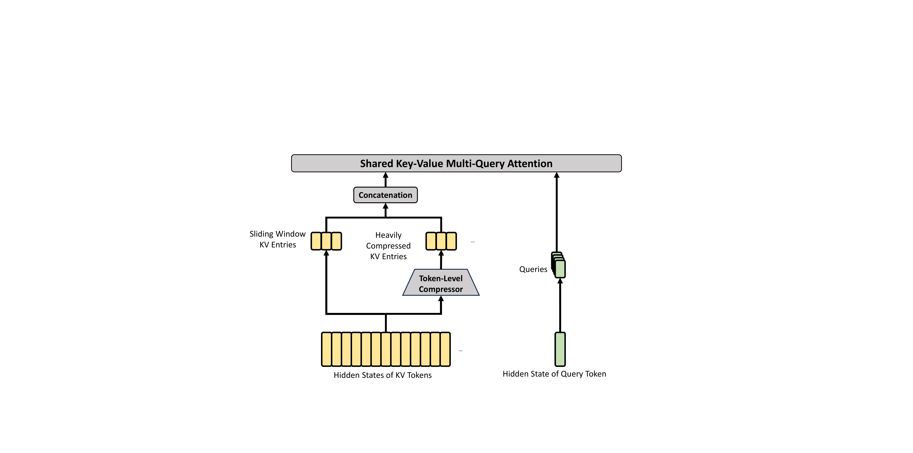
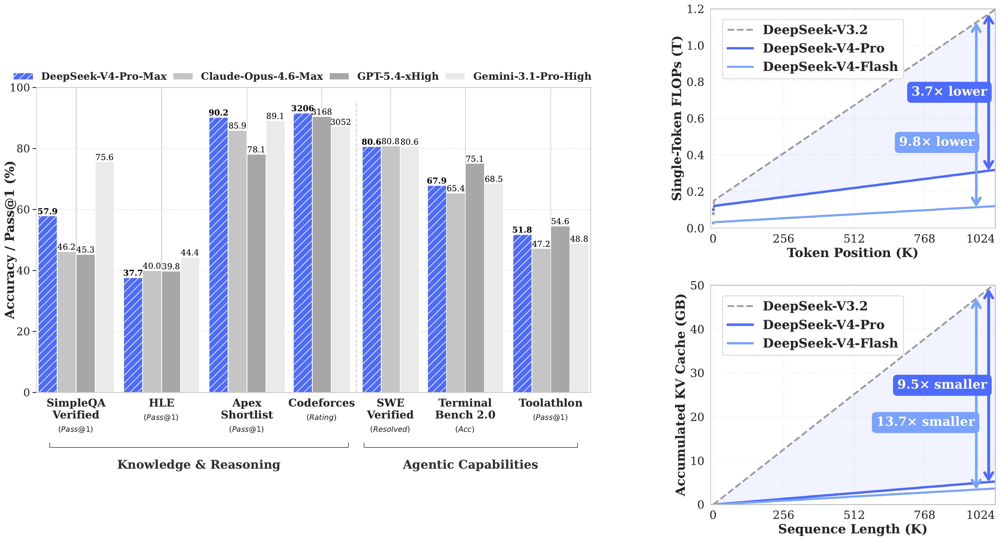
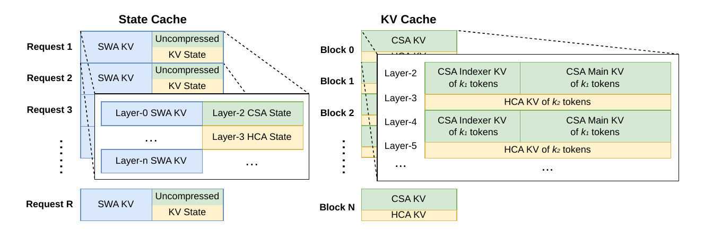
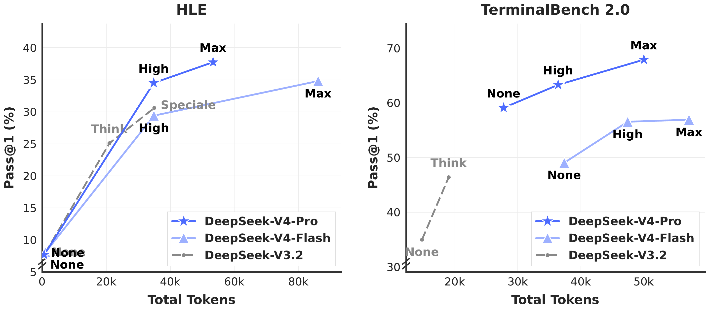
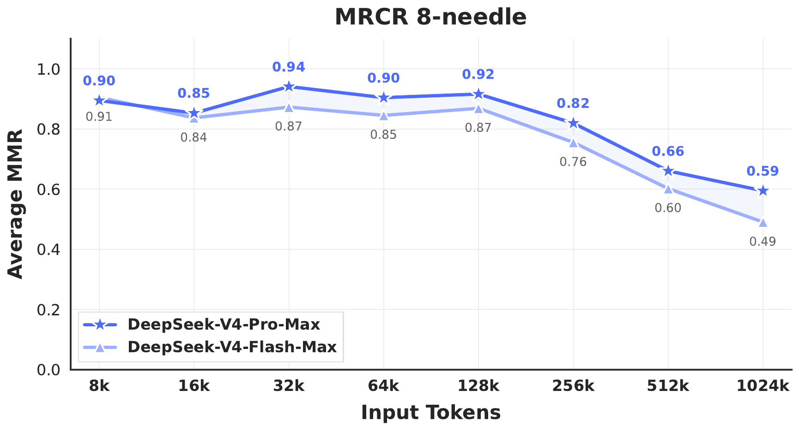

核心判断
这是一篇“模型—训练—推理—后训练—产品协议”联合设计报告，而不是一篇只有新 attention 的论文。DeepSeek-V4-Pro 是 1.6T 总参数、49B 激活参数的 MoE；Flash 是 284B 总参数、13B 激活参数。两者都把窗口扩到 1,048,576 token，但真正让 1M 可用的是六层协同：压缩注意力控制计算和 KV 增长，mHC 稳定并扩展残差流，Muon 与稳定性补丁支撑大规模优化，低精度与确定性内核保证训练/rollout/部署一致，多教师全词表 OPD 合并专家能力，磁盘 KV、WAL 和沙箱系统承载长程 agent 轨迹。
Pro 的 1M 成本
相对 DeepSeek-V3.2，单 token 推理 FLOPs 约 27%，累计 KV cache 约 10%；这是估算的等效计算与缓存量，不是端到端延迟。
预训练 Token
Flash 训练 32T，Pro 训练 33T；序列长度从 4K 逐步扩展到 16K、64K、1M。
OPD 教师
多个数学、代码、agent、指令等专家通过学生自身轨迹上的全词表 reverse-KL 合并进统一模型。
1M MRCR 子设置
Pro-Max 在论文 8-needle 曲线的 1,024K 点为 0.59；容量成立，但检索质量在 128K 后明显下降。
V4 用更低的信息带宽换取更长的时间轴：它把“一百万 token 全连接注意力”改造成“局部原文 + 多尺度压缩记忆 + 稀疏检索”，再围绕这套记忆形态重写训练和服务系统。收益是长程任务终于进入常规工程范围；代价是信息压缩、复杂栈和评测归因都变得更难。
问题重构：瓶颈不是窗口上限，而是长时间轴上的每一步成本
推理模型把 test-time scaling 变成能力增长的新轴，但 vanilla attention 对序列长度的计算是二次增长，KV cache 又随上下文线性增长。当模型需要几十万 token 的历史、长链工具调用、跨文档分析或多轮代码修改时，问题并不是 tokenizer 能否接受这么长的输入，而是每生成一个新 token 是否还付得起注意力计算、缓存读写、网络通信和恢复成本。
V4 的设计目标因此不是“把 RoPE 拉长”这么简单，而是同时回答四个问题：
信息如何保留？
短期细节保留 128-token 原始滑窗；更久历史被压成每 4 token 或每 128 token 一个条目，再由稀疏选择或压缩后 dense attention 读取。
计算如何稳定？
mHC 约束跨层残差混合，Muon 处理矩阵参数，Anticipatory Routing 与 SwiGLU clamp 抑制万亿参数 MoE 的 loss spike。
训练与服务如何一致？
FP4/FP8 QAT、batch invariance、确定性 backward、token 级 WAL，让 rollout、teacher、student 与线上采样尽量保持同一数值行为。
长程任务如何运行？
异构 KV layout、磁盘前缀缓存、百万 token RL 数据装载、可抢占生成服务和 DSec 沙箱共同承载长生命周期。
这解释了论文为什么近一半篇幅在讲 kernel、cache、checkpoint、rollout 和 sandbox：如果只改模型公式，1M 仍然只是实验室上限；只有系统的每一层都接受同一个长上下文契约，才可能把它变成日常能力。
模型全貌：Pro 与 Flash 不是简单的大小杯
论文发布的是 preview 系列，并开放 Base 与 post-trained 两类权重。官方模型卡使用 MIT 许可证；post-trained 权重的 MoE expert 为 FP4、其他多数参数为 FP8，Base 权重为 FP8 mixed。报告把词表概括为 128K，公开配置的精确值是 129,280，最大位置长度是 1,048,576。
| 项目 | DeepSeek-V4-Flash | DeepSeek-V4-Pro | 意味着什么 |
|---|---|---|---|
| 总参数 / 激活参数 | 284B / 13B，约 4.6% 激活 | 1.6T / 49B，约 3.1% 激活 | Pro 总参数约为 Flash 的 5.63×，每 token 激活计算约 3.77×；知识容量差距大于单步计算差距。 |
| 层数 / hidden size | 43 / 4096 | 61 / 7168 | 两者不是等宽缩放，attention heads、专家规模和稀疏 top-k 也同步变化。 |
| Attention 排列 | 前 2 层纯滑窗，之后 CSA/HCA 交替 | 前 2 层 HCA，之后 CSA/HCA 交替 | Flash 在输入端保留更强局部路径；Pro 从第一层就使用长程压缩。 |
| CSA | 压缩率 4；top-k 512 | 压缩率 4；top-k 1024 | Pro 为每个 query 保留更多远程压缩块，能力更强但计算更高。 |
| HCA / 滑窗 | HCA 压缩率 128；局部原始滑窗 128 | 远程历史以高度压缩形式存在，最近 128 token 保留细粒度。 | |
| MoE | 256 routed + 1 shared；激活 6；expert hidden 2048 | 384 routed + 1 shared；激活 6；expert hidden 3072 | 每个 token 都走 6 个 routed expert 和 1 个 shared expert；前 3 个 MoE 层使用 token-ID hash routing。 |
| Heads / head dim | 64 / 512 | 128 / 512 | 共享单一 KV head 的 MQA；部分 RoPE 维度为 64。 |
| mHC / MTP | 残差流扩展 4×；Sinkhorn 20 次；MTP depth 1 | 内层 block hidden size 不变，但跨层状态并行保留四份；MTP 继承 V3。 | |
| 长上下文位置设置 | YaRN factor 16；原始位置上限 65,536；压缩分支 RoPE theta 160,000 | “1M”不仅靠训练 curriculum，也由公开 checkpoint 的位置插值配置落实。 | |
官方发布没有提供 Jinja chat template，而是提供专门的消息编码与解析实现，覆盖 thinking、工具调用、developer/latest reminder 和 Quick Instruction。推荐采样参数为 temperature 1.0、top-p 1.0；Think Max 建议至少 384K context。也就是说，直接加载权重并套用通用 chat template，不能保证复现官方行为。
架构总览：三个缩放轴同时变化

V4 同时沿三条轴扩展：MoE 扩展参数容量、mHC 扩展残差流宽度、CSA/HCA 压缩序列记忆。传统 scaling 常把参数量、隐藏维度、层数看作主轴；V4 则把“可读取历史的表示带宽”和“跨层状态路数”也变成结构参数。
DeepSeekMoE 也有两处变化：routing affinity 从 sigmoid 改为 \(\sqrt{\operatorname{Softplus}(\cdot)}\)，并在无辅助损失负载均衡之外保留权重 \(10^{-4}\) 的 sequence-wise balance loss；最前面的 3 个 MoE 层不再用 dense FFN，而是按 token ID 预定义 hash 到专家。这样既省掉早期 dense 层，也减少最底层 routing 的动态不稳定。
CSA 与 HCA：把长历史变成两种不同分辨率的记忆
两种 attention 都不是把所有原始 token 保存在标准 K/V 中。它们先用逐维 learned gating 把一段 token 压成一个 512 维共享 KV 条目，再让多个 query heads 读取同一组 key/value；最近 128 token 另走未压缩滑窗。区别在于：CSA 压得较轻，再稀疏检索；HCA 压得很重，但对全部压缩条目做 dense attention。
CSA：4× 压缩之后再 top-k

每 4 个位置产出一个压缩条目。为了缓和块边界，CSA 使用两组 KV/weight 分支：当前块的 \(C^a\) 与前一块的 \(C^b\) 共同参与一个压缩条目，候选范围实际覆盖 \(2m=8\) 个 token，但整体条目数量仍约为原序列的 \(1/4\)。压缩不是把 8 个 token 做简单平均，而是每个通道分别 softmax 后加权求和：
Lightning Indexer 也对历史做 4× 压缩，用 64 个 indexer query heads 与每个压缩 key 计算 ReLU 相似度，再由输入相关 head weight 汇总。Flash 选 512 个压缩块，Pro 选 1024 个。随后主 attention 只读取这些远程块与 128 个局部 KV。
关键点：CSA 主 attention 的远程读取近似固定为 top-k，但 indexer 仍需扫描此前约 \(n/4\) 个压缩 key。因此单 token 成本仍随历史长度增长，只是扫描在更低维、更低精度的路径上完成，而昂贵的 512 维主 attention 被限制在固定 top-k。
HCA：128× 压缩后保留 dense 全局视野

HCA 的压缩率是 128，且不使用重叠块。1M token 最终约对应 8192 个远程条目；每个 query 对这 8192 个压缩条目加 128 个局部 token 做 attention。它保留“全局都可见”的拓扑，但每 128 token 只有一个 512 维共享 KV，信息带宽远低于原序列。


HCA 对 \(n/128\) 个压缩条目做 dense attention，CSA indexer 扫描 \(n/4\) 个压缩 key；两者仍让单 token 成本随上下文增长。V4 做的是把增长斜率压低、把高成本计算迁移到更小表示和更低精度，而不是让一百万长度变成常数成本。
其他稳定性细节包括：query 与 compressed KV 在主 attention 前做 RMSNorm；最后 64 维使用 partial RoPE，并对输出施加反向位置旋转以恢复相对位置信号；每个 head 有可学习 attention sink，使注意力权重总和可以小于 1；主 KV 的非 RoPE 维度用 FP8、RoPE 维度保留 BF16，indexer QK 使用 FP4。
mHC、Muon 与稳定性补丁：V4 的另一半不是 long context
mHC：把单一残差流变成受约束的四路状态
标准 Hyper-Connections 把 residual stream 从 \(d\) 扩展为 \(n_{\mathrm{hc}}\times d\)，每个 block 仍只接收一份 \(d\)-维输入。mHC 的更新是：
关键不是多四份状态本身，而是把 \(B_l\) 约束为双随机矩阵所在的 Birkhoff polytope：
双随机约束把谱范数限制在 1，矩阵集合又对乘法闭合，因此深层堆叠时残差变换是 non-expansive。模型从输入状态动态生成 \(A_l,B_l,C_l\)，再用 sigmoid 限制输入/输出映射，用 20 次 Sinkhorn 行列归一化投影 \(B_l\)。这让残差连接从固定“旧状态 + 新状态”升级为输入相关、但受稳定流形约束的状态路由。
代价是 activation 与 pipeline 通信增加。论文通过 fused kernel、选择性重算和 DualPipe 调整，把 mHC 的 wall-time overhead 控制在 overlapped 1F1B stage 的 6.7%。但本报告没有给 V4 内部的 mHC on/off 消融，能力归因依赖单独的 mHC 论文。
Muon：矩阵更新先近似正交化
除 embedding、prediction head、mHC 静态 bias/gate 和 RMSNorm 等少数组件保留 AdamW 外，多数参数使用 Muon。Muon 对带 Nesterov momentum 的梯度矩阵做 Newton–Schulz 近似正交化，再按矩阵形状重标度更新。V4 使用 10 次两阶段迭代：前 8 次系数 \((3.4445,-4.7750,2.0315)\) 快速把奇异值拉近 1，最后 2 次用 \((2,-1.5,0.5)\) 稳定收敛。
Flash 与 Pro 的 Muon momentum 都为 0.95、weight decay 为 0.1，update RMS rescale 为 0.18；AdamW 使用 \(\beta_1=0.9,\beta_2=0.95,\epsilon=10^{-20}\)。attention 的 query/KV RMSNorm 抑制 logit 爆炸，因此没有使用 Kimi K2 的 QK-Clip。和 mHC 一样，报告没有给 Muon vs AdamW 的等预算曲线，无法从最终 benchmark 单独确认优化器贡献。
两个非常工程化的 loss-spike 修复
Anticipatory Routing
step \(t\) 的 backbone 用当前参数 \(\theta_t\)，routing index 却由历史参数 \(\theta_{t-\Delta t}\) 预先计算。系统在检测到 loss spike 后短暂回滚并启用该模式；启用期间 wall-time 约 +20%，全程总体开销被称为可忽略。
SwiGLU Clamping
linear 分支截断到 \([-10,10]\)，gate 分支只设上限 10。作者报告它消除异常值且不损性能，但明确承认机制尚缺理论解释。
Anticipatory Routing 的深层含义是：MoE 的不稳定可能来自 router 与表示同时快速变化形成的正反馈。用“陈旧但更平滑”的 routing 决策打断同步耦合，比单纯 rollback 更接近针对原因的控制；但论文没有披露 \(\Delta t\)、触发阈值、启用时长和 spike 统计，外部团队难以直接复现。
系统基础设施：为什么这部分不是附录
V4 的架构改变了每一层的状态形态，因此训练与推理系统不能继续假设“所有层有同样的 KV、所有 optimizer 都是逐元素、被抢占的 rollout 可以重跑”。报告的系统章节实际上给出了模型能够成立的必要条件。
MegaMoE wave pipeline
把专家分成 waves，让当前 wave 计算、下一 wave token 传输、上一 wave 结果回传并行。相对强非融合 baseline，一般推理 1.50–1.73×，RL rollout/低延迟场景最高 1.96×；在 NVIDIA GPU 与华为 Ascend NPU 上验证，CUDA mega-kernel 已公开。
TileLang kernel stack
host codegen 把 Python 侧校验降到每次调用不足 1 微秒；Z3 辅助整数分析用于 layout、barrier、bound；默认关闭 fast-math，并提供显式 IEEE 与近似算子。
Batch invariance
同一 token 不因 batch 位置而改变 bit。attention 用双 kernel 保留积累顺序，GEMM 用 DeepGEMM 取代 cuBLAS，并尽量放弃破坏 invariance 的 split-KV/split-k。
Deterministic backward
sparse attention 为每个 SM 分配独立梯度 buffer 后确定性汇总；MoE 预排序 token 并隔离 rank buffer；mHC 的 split-k 输出分片后再固定顺序 reduce。
Hybrid ZeRO for Muon
矩阵不能随意切开做逐元素更新，因此用 knapsack 把完整矩阵分给 rank，dense 参数 padding 通常低于 10%；MoE experts 单独优化，BF16 梯度经 stochastic rounding 通信，再在本地 FP32 求和。
Tensor-level checkpoint
用 TorchFX 找到被标记 tensor 的最小重算子图，释放原 storage 后复用指针；开发者只写 forward，不必手工实现整层 backward。
异构 KV cache 与磁盘前缀复用
CSA main KV、CSA indexer KV、HCA KV、滑窗 KV、尚不足一块的未压缩尾部状态，长度和更新规则都不同。V4 把 SWA 与未压缩尾部视为每个请求固定大小的 state cache，把压缩条目放进 classical block cache；每个 block 覆盖 \(\operatorname{lcm}(4,128)\) 个原 token，以同时满足两种压缩率和 kernel alignment。
共享前缀可写入磁盘：CSA/HCA 的完整压缩条目直接缓存；SWA 提供三种策略——全量保存、周期 checkpoint、完全不保存并重算最后 \(n_{\mathrm{win}}\times L\) 个 token。这里最重要的不是某个策略更好，而是长上下文部署变成了“存储写放大 vs 重新 prefill”的系统优化问题。
上下文并行必须理解压缩边界
普通 context parallel 把连续 token 分给不同 rank，但每 4/128 token 的压缩块可能跨 rank，packed sequence 的尾部又可能不足一块。V4 用两阶段通信：先把每个 rank 最后 \(m\) 个原始 KV 发给下一 rank 补齐边界，再 all-gather 固定长度的本地压缩条目并做 fused select-and-pad。压缩不是 attention kernel 的局部细节，它直接改变了分布式数据布局。
预训练：32T+ Token 与从 dense 到 sparse 的课程
数据在 V3 基础上继续扩充：过滤批量自动生成/模板化网页内容，强化数学、代码、agentic mid-training、多语言长尾知识与科学论文/技术报告等长文档；沿用 token splitting、FIM，并按来源打包文档减少截断，同时改用 sample-level attention mask。论文没有公布各类数据比例、截止时间、去重/污染细节或完整数据清单。
| 设置 | Flash | Pro | 共同设计 |
|---|---|---|---|
| 训练 token | 32T | 33T | 超过 32T 的混合语料；没有公布总训练 FLOPs 与硬件规模。 |
| 最大 batch | 75.5M token | 94.4M token | 先从小 batch 逐步增加，再保持大 batch。 |
| 学习率 | 峰值 \(2.7\times10^{-4}\)，末尾 \(2.7\times10^{-5}\) | 峰值 \(2.0\times10^{-4}\)，末尾 \(2.0\times10^{-5}\) | 前 2000 steps 线性 warmup，主体恒定，末段 cosine decay。 |
| 长度 curriculum | 4K → 16K → 64K → 1M | 先学短序列，再把模型和系统逐步暴露给更长状态。 | |
| Sparse attention curriculum | 前 1T token 使用 dense attention | dense 阶段比 Flash 更长，未给精确 token | 到 64K 才引入 sparse；先单独 warm up lightning indexer，再进入主稀疏训练。 |
| MTP loss | 主体 0.3，learning-rate decay 开始后降为 0.1 | MTP depth 1，策略与 V3 相同。 | |
| 负载均衡 | bias update speed 0.001；sequence balance loss weight 0.0001 | 主策略仍是 auxiliary-loss-free，但保留极轻的序列级保险。 | |
作者没有从 step 0 就把模型扔进 1M sparse regime，而是把长度、稀疏 selector 与学习率分开 warm up。对新 attention 来说，最危险的不是最终公式，而是表示和 selector 在早期同时漂移；课程设计相当于先建立语言建模底座，再逐渐收紧信息带宽。
后训练：先把能力分开练，再用 OPD 编译回一个模型
最终模型不是对一个统一 reward 做到底。DeepSeek 先为数学、代码、agent、指令遵循等领域分别训练 specialist：高质量 SFT 建底座，再用 GRPO 和领域 verifier/reward 做 RL。随后完全取消 V3.2 最后的 mixed-RL 合并阶段，改用多教师 On-Policy Distillation。
常见做法只采样当前 token，把 teacher/student log-ratio 当作 policy advantage，省资源但梯度方差高。V4 选择在每个位置计算完整词表 reverse KL。为避免十多个、甚至万亿参数 teacher 同时驻留，系统把 teacher 权重放在集中式分布存储，按需 ZeRO-like shard 加载；只缓存 teacher 最后一层 hidden state，训练时再加载对应 prediction head 重建 logits，并按 teacher index 排序样本，使每个 mini-batch 同时只驻留一个 head。
论文说模型会按任务选择相关 specialist，但没有披露 \(w_i\) 如何随样本变化、teacher routing 如何决定、domain mixture 和 teacher 更新是否同步。全词表 KL 的系统实现讲得很细，能力合并策略本身反而仍是黑盒。
难验证任务：actor 同时学习当 generative reward model
易验证任务继续使用规则或测试；开放式任务不再依赖传统 scalar reward model，而是构造 rubric-guided 数据，让 generative reward model 解释并评价 trajectory，并对 GRM 本身做 RL。报告称 actor network 原生承担 GRM，使生成与判断共享推理能力，只需少量多样化人工标注；但没有给 annotation 数量、GRM 校准、独立 judge 一致性或 reward-hacking 分析。
三档 reasoning effort 不是同一个采样长度旋钮
Non-think、High、Max 的 specialist 在 RL 阶段使用不同长度惩罚与 context window；评测时对应 8K、128K、384K。Max 还注入一段要求穷尽路径、边界和反例的系统指令。换言之，Max 的成绩同时包含训练分布、可用 context、输出 token 预算和显式提示变化，不能只归因于“模型愿意多想一会儿”。
工具协议与上下文管理
DSML XML 工具调用
专用 DSML token + XML invoke/parameter 结构，字符串与 JSON 参数显式区分；作者称能减少 escaping 和 tool-call 错误。
Interleaved thinking
有真实工具定义时，跨用户轮次保留全部 reasoning history；普通对话仍在新用户消息到来时丢弃旧 reasoning。用 user message 模拟工具的 harness 可能无法触发该路径。
Quick Instruction
在已有 KV 后追加特殊 token，一次处理是否搜索、query、authority、domain、URL 是否读取、标题等辅助任务，替代单独小模型与重复 prefill。
FP4 QAT、可恢复 rollout 与百万 Token RL
post-training 对 MoE expert weight 和 CSA indexer QK 路径做 MXFP4 QAT；index score 从 FP32 降为 BF16，使 top-k selector 加速 2×，保留 99.7% 的 KV-entry recall。rollout 直接使用真实 FP4 权重而非 fake quant，减少 train–serve gap。公开数字没有把 0.3% selector miss 转换成最终任务质量影响。
生成服务为每个请求写 token-granular Write-Ahead Log。被抢占时保存未完成请求的 KV；恢复后继续 decode；硬件致命错误则用 WAL token 重新 prefill。作者特别指出：中断后从头重新采样会引入长度偏差，因为短回答更容易在中断前完成并被保留。这个细节说明系统故障处理会改变训练分布，不只是影响吞吐。
Agentic RL 由 DSec 沙箱承载：Rust 实现的 API gateway、host agent、cluster watcher 运行在 3FS 上，一个集群管理数十万并发实例；统一 SDK 后面是预热 function call、Docker-compatible container、Firecracker microVM、QEMU fullVM 四种 substrate。全局有序 trajectory log 用于抢占恢复、非幂等命令去重、来源追踪和确定性 replay。
评测到底测了什么？先把输入、输出、预算和 metric 对齐
论文把 Base、标准 reasoning、长上下文、agent、形式化数学和内部产品任务混在一份大报告里。它们评估的对象不同，不能拿一个“平均 benchmark”概括。
| 评测族 | 输入 → 输出 | 工具 / 预算 | 评分对象 | 最容易误读 |
|---|---|---|---|---|
| Base model | 知识、理解、代码、数学、长文问题 → 文本/程序答案 | 0–25 shot，统一内部框架 | EM、F1、Pass@1、LongBench-V2 | 这是 pre-trained Base，不等于最终 Chat；统一内部设置仍未公开完整 harness。 |
| 标准 reasoning | 知识/数学/代码问题 → 带推理的最终答案或程序 | temperature 1.0；Non-think/High/Max 为 8K/128K/384K；Codeforces 每题先生成 32 个候选，再随机取 10 个形成提交序列 | Pass@1、EM、Codeforces rating | Max 不只是“更多 token”，也换了 RL 配置、窗口和 system instruction。 |
| 形式化数学 | Lean 命题 + 可选自然语言解 → 可编译 Lean proof | Lean 4.28.0-rc1，最多 500 tool calls；高算力版本先生成/自验证自然语言解，再指导 formal agent | 严格 comparator 接受才算正确 | 120/120 属于 substantial compute 的 hybrid frontier regime，不是普通单次回答。 |
| 1M long context | 多 needle 或大型 corpus → 检索/综合答案 | MRCR、CorpusQA；重新评测 Opus 4.6 与 Gemini 3.1，GPT-5.4 因大量 API 请求失败未评 | MRCR MMR、CorpusQA ACC | 论文没有在正文定义 MMR；1M 汇总分也不等于每个 needle/长度子设置。 |
| Code / terminal agent | 真实 repo 或终端环境 → 工具动作、patch、最终状态 | 内部最小 harness：bash + file edit；最多 500 steps，512K context | Resolved / accuracy | 分数是模型 + harness + 环境镜像 + context policy 的系统表现。 |
| Search / tool agent | 需要检索的问题或 MCP 工具集 → 搜索动作、证据和答案 | 内部 web search + Python harness，最多 500 steps、512K；BrowseComp 使用 discard-all context policy | Pass@1、Elo | 同一模型换搜索栈、并发与 context 管理，结果可能显著变化。 |
| 内部真实任务 | 中文写作、搜索、30 个白领工作流、30 个内部 R&D 任务 → 文档/分析/代码产物 | 内部数据、人工 pairwise 或 rubric | win/tie/loss、pass rate、四维人工评分 | 贴近产品但不可公开复验；内部员工调查也有明显选择偏差。 |
K2.6 与 GLM-5.1 的若干格子为空，因为 API 繁忙未返回；Terminal-Bench 仍报告原始 2.0 数据，同时补充 Pro 在 Verified subset 约 72.0。外部闭源模型由作者重新评测，模型版本、API 行为和并发限制都会影响可比性。
核心结果：强在哪里，差距又在哪里
Base：Flash 的参数效率是真实信号，但不是全面替代
按表格的 24 项能力分数做严格逐项比较，13B activated 的 Flash-Base 有 17 项高于 37B activated 的 V3.2-Base；Pro-Base 有 21 项严格更高。Flash 的优势集中在世界知识、HumanEval、多语言数学和 LongBench-V2，但 BigCodeBench、MATH、GSM8K、BBH、HellaSwag 等仍落后。Pro 的突出增益来自 parametric knowledge：SimpleQA 55.2 vs V3.2 的 28.3，FACTS Parametric 62.6 vs 27.1，MultiLoKo 51.1 vs 38.7；但 BigCodeBench 59.2 仍低于 63.9，CMath 90.9 低于 92.6。
Flash 严格胜 V3.2
只统计分数更高，不把论文“差距 ≤0.3 视为同级”的行计作胜利。
Pro 严格胜 V3.2
BBH 低 0.1；BigCodeBench 和 CMath 明显较低，说明规模与新架构不是逐项单调。
Flash 激活参数占 V3.2
13B / 37B；这是架构、数据、token 数和训练 recipe 的联合收益，不能只归因于 CSA/HCA。
Pro-Max：开源前沿，但并没有全面超过闭源前沿
| Benchmark | V4-Pro-Max | 最强对照 | 判断 |
|---|---|---|---|
| SimpleQA-Verified | 57.9 | Gemini-3.1-Pro 75.6 | 比 K2.6 36.9 / GLM-5.1 38.1 高约 20 点，但离最佳闭源模型仍远。 |
| GPQA Diamond / HLE | 90.1 / 37.7 | Gemini 94.3 / 44.4 | 教育知识与困难推理仍落后闭源前沿。 |
| LiveCodeBench / Codeforces | 93.5 / 3206 | 表内最高；GPT-5.4 Codeforces 3168 | 代码 reasoning 是最强项之一；Codeforces rating 依赖 32 候选与模拟提交协议。 |
| Apex / Apex Shortlist | 38.3 / 90.2 | Gemini Apex 60.9；Shortlist 表内最高 | 同属数学 benchmark 却一弱一强，不能用单一“数学能力”概括。 |
| SWE Verified / SWE Pro | 80.6 / 55.4 | Opus 80.8；K2.6 SWE Pro 58.6 | 成熟 SWE 题接近闭源，难度更高的 SWE Pro 未领先。 |
| Terminal Bench 2.0 | 67.9 | GPT-5.4 75.1 | 高于 Opus 65.4，但仍显著低于 GPT；环境和 harness 差异要谨慎。 |
| MCPAtlas / Toolathlon | 73.6 / 51.8 | Opus 73.8；GPT 54.6 | 广泛工具泛化接近闭源，但不是全面领先。 |
Reasoning effort：Flash 能用 token 追近，但边际收益取决于任务

从 Non-think 到 Max，Pro 的 HLE 从 7.7 到 37.7，Apex 从 0.4 到 38.3，LiveCodeBench 从 56.8 到 93.5；这说明 reasoning training 与 budget 是决定性因素。Flash-Max 在 HMMT 94.8、IMOAnswerBench 88.4、LiveCodeBench 91.6，确实接近 Pro-Max 的 95.2、89.8、93.5；但 SimpleQA 34.1 vs 57.9、TerminalBench 56.9 vs 67.9、BrowseComp 73.2 vs 83.4，暴露了参数容量对世界知识与复杂 agent 状态建模的价值。
Max 也不保证每项更高：Flash MMLU-Pro 86.2 低于 High 的 86.4，Pro MCPAtlas Max 73.6 低于 High 的 74.2。测试时算力是可调资源，不是单调无风险的能力旋钮。
1M：汇总分很强，长度曲线却明确显示衰减

大表中的 “MRCR 1M” 汇总分是 Pro 83.5、Flash 78.7，Pro 高于 Gemini 76.3、低于 Opus 92.9；CorpusQA 是 Pro 62.0、Flash 60.5，高于 Gemini 53.8、低于 Opus 71.7。但 8-needle 子图在 1M 明显更低，说明表格汇总和单一 needle 设置不是同一统计口径。最可靠的结论是：V4 在 1M 仍保有可用检索能力且优于部分强模型，不是“到 1M 几乎无损”。
内部真实任务：产品信号很丰富，可复验性很弱
| 任务 | 样本 / 结果 | Insight | 边界 |
|---|---|---|---|
| 中文功能写作 | 3170 例；V4-Pro win 62.65%，Gemini-3.1-Pro win 34.10%，tie 3.25% | 办公、邮件、长文、生活文本优势广；作者归因之一是 Gemini 风格偏好会覆盖用户要求。 | 内部 prompt、judge 与盲评细节未公开。 |
| 中文创意写作 | 2837 例；指令遵循 60.03% vs 39.44%，写作质量 77.48% vs 22.35% | 写作质量优势大；歌词指令遵循反而只有 26.67% vs 73.33%，细分类别不均衡。 | 类别样本量差异极大，少数小类百分比不稳定。 |
| 复杂 / 多轮写作 | 196 例；V4 45.9%，Opus-4.5 52.0%，tie 2.0% | 普通中文写作胜 Gemini，不代表高约束、多轮场景胜 Opus。 | 对照从 Gemini 换成 Opus，不宜横向拼成一条 leaderboard。 |
| V4 RAG vs V3.2 RAG | 956 例；V4 win 28.1%，V3.2 win 10.4%，tie 61.5% | 相对优势明确，但多数样本没有可见差异；“大幅领先”要连同高 tie rate 阅读。 | 检索源、judge、时效性未公开。 |
| Agentic Search vs RAG | 869 例；agent win 61.7%，RAG win 18.3%，tie 20.0% | 复杂主观题 win 68.5%，说明多轮工具使用很有价值。 | 平均 prefill 13,649 vs 10,453（+30.6%），output 1,526 vs 1,308（+16.7%），另有 16.2 次工具调用；“只略贵”取决于工具成本。 |
| 中文白领工作流 | 30 个任务、13 行业；对 Opus-4.6-Max 总体 win/tie/lose = 53/10/37 | non-loss 63%；任务完成与内容质量强，instruction following 略低，PPT 视觉和长文压缩较弱。 | 任务量很小且为内部 harness。 |
| 内部 R&D Coding | 约 200 候选筛到 30；V4-Pro-Max pass 67%，Opus-4.5 70%，Opus-4.5 Thinking 73%，Opus-4.6 Thinking 80% | 显著胜 Sonnet 4.5 的 47%，接近普通 Opus 4.5，但离最新 thinking 对照仍有 13 点。 | 内部 repo、环境和 rubric 不开放；筛选过程可能改变难度分布。 |
| 内部开发者调查 | \(N=85\)；52% “是”、39% “倾向是”、不足 9% “否” | 91% 正向表明日常可用性强，常见抱怨是低级错误、模糊需求误读和 over-thinking。 | 全是已在日常使用 V4 的 DeepSeek 员工，不能视作独立市场调查。 |
术语与概念对齐
证据边界与没有被证明的事
最终模型同时改变 attention、mHC、optimizer、MoE routing、数据、训练 token、长上下文 curriculum、低精度和后训练。报告没有提供 CSA vs HCA、不同压缩率/top-k、mHC on/off、Muon vs AdamW、QAT on/off、OPD vs mixed RL 的等预算对照，因此最终性能不能被因果归因到任何单一创新。
- 效率是估算，不是完整 serving benchmark。Headline 使用 equivalent FP8 single-token FLOPs 与 accumulated KV size；没有给 1M prefill latency、decode tok/s、并发吞吐、TTFT、能耗、磁盘命中率或真实价格。FP4×FP8 在现有硬件上峰值与 FP8×FP8 相同，论文所说未来可再快约 \(1/3\) 仍是硬件潜力。
- 1M 是容量上限，不是无损能力保证。MRCR 8-needle 在 128K 后持续下滑；HCA 把 128 token 压成一个条目，本身就是强信息瓶颈。论文没有按信息密度、needle 数、位置、跨块依赖给出完整 stress test。
- 数据透明度有限。只描述 32T+ 的大类与原则，没有比例、截止时间、语言分布、污染控制结果、合成数据占比、版权与敏感数据审计，也没有训练 FLOPs、GPU/NPU 数、wall time 或能耗。
- Benchmark 可比性有限。闭源模型由作者内部重测，部分 API 因繁忙或长请求失败而空缺；Max 同时拥有更长窗口、更多输出、不同 RL 配置和特殊提示；agent harness 与上下文策略也不统一。
- 内部真实任务不是公开 benchmark。中文写作、搜索、白领任务、R&D code 与员工调查提供很有价值的产品信号，但数据、rubric、judge、环境和抽样不可复验。
- 安全评估几乎缺席。报告没有系统展示危险能力、越狱、prompt injection、工具权限、隐私、偏见、幻觉校准或 sandbox escape 结果；开放权重为 MIT 并不替代风险说明。
- 开放权重不等于开放生产系统。官方提供配置、消息编码和简化参考推理实现，但 optimized training stack、线上 KV/storage 调度、完整 DSec、数据与后训练 recipe 并未全部开放；参考实现的部分缓存/矩阵路径为清晰性仍用 BF16。
- GRM 与 OPD 的治理仍是黑盒。没有公布 rubric 数据量、独立 judge 校准、self-reward 失败模式、teacher 权重/路由和 domain conflict 处理，无法判断多教师合并是否在长尾任务上发生隐藏遗忘。
- 作者自己承认架构过于复杂。结论明确说为了降风险保留了许多已初步验证的组件，未来要把架构蒸馏到更本质、更优雅的设计；Anticipatory Routing 与 clamp 的原理也尚未理解。
独立 Insight：这篇报告真正教会了什么
1. 百万 Token 是系统契约，不是模型属性
如果把 V4 简化成“CSA + HCA”，会漏掉最重要的东西。1M 需要 attention 表示、KV layout、context parallel、低精度、batch invariance、磁盘 prefix、抢占恢复、RL 数据装载和 sandbox 生命周期全部接受同一状态模型。任何一层仍按普通 dense Transformer 假设设计，都可能把上层节省重新吃掉。未来讨论 long context，应把“窗口长度”拆成模型可接受长度、质量可用长度、经济可用长度和可恢复任务长度四个概念。
2. V4 的效率来自“受控遗忘”，不是免费记忆
CSA/HCA 本质上在设计遗忘曲线：最近 128 token 保留原文，较远内容先压成 4-token resolution，再在另一半层压成 128-token resolution。模型用多层、多个 query heads 和动态压缩权重尽量让重要信号穿过瓶颈，但无法违反信息容量。MRCR 在 128K 后的下降不是意外噪声，而是这笔交易的外显价格。下一代工作真正要优化的，不只是更低 FLOPs，而是“每字节 KV 能保留多少任务相关信息”。
3. Pro / Flash 揭示了 parametric memory 与 test-time reasoning 的分工
Flash 只有 Pro 约四分之一的 activated params，却能用更多 thinking token 在 HMMT、IMOAnswerBench、LiveCodeBench 上追得很近；但 SimpleQA、BrowseComp、TerminalBench 的差距仍大。这说明可验证推理更容易用 test-time compute 补偿，世界知识与复杂 agent 状态更依赖参数容量和内部表示。产品路由不应只按“难题用 Pro、简单题用 Flash”，而应区分：题目难在搜索/知识、长程状态，还是难在可验证的推理深度。
4. 多教师 OPD 像一个“能力编译器”
传统统一后训练试图让一套 reward 同时塑造所有行为；V4 先让每个 specialist 在自己的 verifier 和数据分布上成为强 policy，再在统一 student 自己产生的状态上做 distribution-level linking。这里的突破可能不只是蒸馏效果，而是组织训练：domain team 可以独立迭代 teacher，中心流水线负责把能力编译回统一 checkpoint。真正的研究问题将从“怎样混一份 RL 数据”变为“怎样调度 teacher、解决冲突并监测能力回归”。
5. 确定性不是调试偏好，而是 RL 正确性条件
当 rollout 由量化 inference 生成、gradient 在另一套 training kernel 上计算、任务又可能随时被抢占时，数值差异会改变 token、routing、长度和 reward。V4 把 batch invariance、bitwise kernel、真实 FP4 rollout 与 WAL 放进同一体系，说明大规模 RL 的“算法”已经包含故障恢复和数值复现。尤其“从头重采样导致短回答偏置”是一个可迁移结论：任何异步或可抢占生成系统都应审计恢复策略是否改变数据分布。
6. 产品协议正在反向进入模型设计
DSML、interleaved thinking、Quick Instruction 看似 API 细节，实际决定了模型看到什么历史、何时保留 reasoning、如何路由搜索和工具。V4 甚至用特殊 token 复用已有 KV 来完成 query/authority/domain 分类，替代独立小模型。模型架构与 agent harness 的边界正在消失：未来 benchmark 若忽略消息编码、工具 schema 和 context policy，就很难说自己只在比较“模型”。
7. “开放 SOTA”的证据标准需要升级
V4 开放了巨大 checkpoint、配置和参考实现，这是实质性贡献；但结果归因、生产效率和真实任务优势仍高度依赖未开放系统。对这类报告，最合理的态度不是在“营销”与“全信”之间二选一，而是分层接受：模型规格和公开权重可直接核验；论文表格是强证据但带 harness 条件；内部产品评测是有方向性的信号；单组件因果贡献与线上成本则仍待第三方复现。
8. 所谓 online learning 的地基已经出现，但 V4 本身还不是在线学习系统
1M context、磁盘前缀、完整 reasoning history、trajectory log、可恢复 sandbox，确实让 agent 能在更长时间内“像在学习”一样积累状态；但这里的主要学习仍发生在上下文和工作区，模型参数不会在部署中持续更新。把 long-horizon memory、经验选择和安全的权重更新连起来，才是论文所展望的下一步。
对研究、训练和部署的具体建议
做 long-context 研究
同时报告最大长度、长度曲线、needle 数、信息密度、跨块依赖和真实 wall-clock；把“模型能跑”与“任务质量稳定”分开。
设计新 attention
用“每字节任务相关信息”而非压缩率做核心指标；单独消融 local window、compression ratio、selector recall、top-k 和 layer mix。
训练 MoE
监控 router/backbone 同步耦合、expert outlier、sequence imbalance 与 spike 前兆；把 stale routing 与 clamp 当作待验证控制变量，不直接照搬固定阈值。
构建 RL 系统
把 rollout precision、batch invariance、抢占恢复、随机种子、WAL 与非幂等工具 replay 纳入算法验收，而不是只测吞吐。
选择 Pro / Flash
可验证推理且预算敏感时优先实测 Flash；知识密集、复杂 agent、搜索或长程状态任务更可能需要 Pro。Max 必须按边际 token 收益启用。
复现优先级
先核验公开 checkpoint 的 128K→1M 质量曲线和真实显存/延迟，再做 attention/mHC/Muon 消融，最后复现多教师 OPD；不要从 headline benchmark 倒推组件贡献。
至少用短上下文、128K、256K、512K、1M 五档；分别测纯检索、跨块组合、代码 agent、工具多轮；记录 prefill、decode、KV、磁盘 I/O、失败恢复后输出一致性；固定 reasoning budget 后再比较模型。只有同时通过能力、成本和恢复三条线，才能把“支持 1M”写成生产结论。
证据边界与资料索引
本文以 arXiv v1 技术报告、论文 TeX/附表/原始图、官方 Hugging Face 模型卡与公开配置、消息编码说明和参考推理实现为核心证据。论文共 58 页，署名 DeepSeek-AI 与 318 位共同作者，arXiv 分类为 cs.CL / cs.AI。Benchmark 与内部评测数字按作者报告陈述；对严格胜项计数、参数比例和 token 成本增幅为依据公开表格做的算术整理。没有独立复跑 284B/1.6T 权重，也没有把作者的内部任务当作第三方可复验结论。
- DeepSeek-V4 arXiv：摘要与版本信息；v1 PDF；实验性 HTML。
- 官方模型：DeepSeek-V4-Pro；DeepSeek-V4-Flash；Pro-Base；Flash-Base。
- 公开实现：参考推理代码；消息编码与 DSML 说明；Pro 配置；Flash 配置。
- 关键前置工作：DeepSeek-V3.2 / DeepSeek Sparse Attention；mHC: Manifold-Constrained Hyper-Connections；On-Policy Distillation。
- 系统与评测：MegaMoE CUDA 实现；DeepGEMM；3FS；OpenAI MRCR 数据集；CorpusQA。